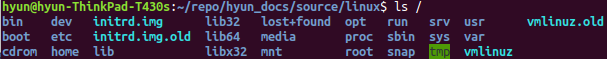

目录结构¶
根目录如下所示：
树状目录结构：

目录说明:
/bin:
bin 是 Binaries(二进制文件)的缩写，目录存放着经常使用的命令
/boot:
存放 Linux启动时使用的核心文件，包括一些连接文件以及镜像文件
/dev:
dev 是 Device(设备)的缩写，该目录下存放的是Linux的外部设备
/etc:
etc 是 Etcetera(等等)的缩写，存放所有系统管理所需要的配置文件和子目录
/home:
用户主目录，在 Linux中，每个用户都有一个自己的目录，一般该目录是以用户的账号命名的
/lib:
lib 是 Library(库)的缩写，存放着系统最基本的动态连接共享库
/lost+found:
一般该目录是空的，当系统非法关机后，存放一些文件
/media:
linux 系统会自动识别一些设备(如U盘，光驱等)挂载到这个目录下
/mnt:
让用户临时挂载别的文件系统
/opt:
opt 是 optional(可选)的缩写，是给主机额外安装软件所放的目录
/proc:
proc 是 Processes(进程)的缩写，是一种虚拟文件系统，存储的是当前内核运行状态的一系列特殊文件， 这个目录是一个虚拟的目录，它是系统内存的映射，我们可以通过直接访问这个目录来获取系统信息。这个目录的内容不再硬盘上而是在内存里。
/root:
系统管理员目录
/sbin:
存放的是系统管理员使用的系统管理程序
/srv:
存放一些服务启动之后需要提取的数据
/sys:
该文件系统是内核设备树的一个直观反应，当一个内核对象被创建的时候，对应的文件和目录也在内核对象子系统中被创建
/tmp:
tmp 是 temporary(临时)的缩写，用来存放一些临时文件
/usr:
usr 是 unix system resources(unix 系统资源)的缩写，用户的很多应用程序和文件都放在这个目录下
/usr/bin:
系统用户使用的应用程序
/usr/sbin:
超级用户使用的比较高级的管理程序和系统守护程序
/usr/scr:
内核源代码默认放置的目录
/var:
var 是 variable(变量)的缩写，我们习惯将哪些经常被修改的目录放在这个目录下，包括各种日志文件